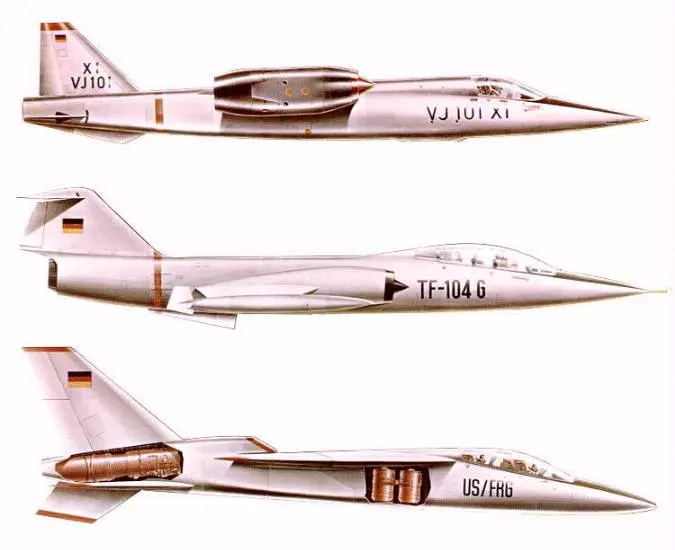

美国共和航空公司和西德Entwicklungsring Sud股份有限公司组成合资企业，研发具备短距/垂直起降能力的新型战斗/攻击机，以接替F-104战斗机。该项目不得不与美国空军最大飞行速度M2.8的FX项目，以及美国海军的VFAX高级截击机项目争夺国防资金，国防和工业部官员认为，只有一个能获得批准。国防部国际安全事务办公室（I.S.A.）的智囊团还提出了“国际战斗机”，概念与US-FRG有重合
US-FRG战斗轰炸机已完成技术设计阶段，距离制造实机的阶段不远。其采用上单翼，预计配备20毫米航炮，可挂载常规炸弹，翼尖可挂载空空导弹，携带10000-14000磅的载荷。4个升力发动机两两并联，在停放和平飞状态收进机体内，在短距/垂直起降时伸出外面。得益于垂直起降能力，可以灵活部署在战场附近，在面积极小的空地或损毁的机场上起降，低空高速突防。
该机是串列双座布局，后座是投弹手和领航员。它的最大毛重是18.1吨-20.4吨，属于中型机，在低空的最大飞行速度接近音速。在海拔6096米的高度以下，该机的对空状态应该能和苏联现有的任何截击机匹敌，在这个高度以上则处于劣势，因为该机的设计考虑了对地攻击而不是纯粹的空优。
非正式研究探讨了将该机转换成截击机的可能，可“临时”执行空军FX项目的任务，这需要提高巡航发动机推力和操纵性。支持者认为该机可以填补下一代战斗机服役前过渡时期的空白
(上图为Entwicklungsring Sud的方案，我们可以看到通过俯视图看到,分开的双矩形进气道位于机体背部后方，这是为了尽量减少主发动机吸入升力发动机喷出的热空气。）
[有问题百度一下]